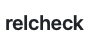

Valid use
This document demonstrates valid use of relative links within markdown as recognized by the relcheck tool.
Links
- Simple relative links are recognised Valid use
- and so are links that traverse upwards Introduction
- even files with spaces in their name are supported! See Issues caught
With line specified
Anchors
- Anchors can be validated Introduction#why
- Even duplicate anchors are supported! Introduction#why-1
Code blocks
Markdown links within code blocks are ignored so because they would not be clickable in the rendered document anyway:
[nonexistent](./non.md#existent)
also doesn't get confused by exotic formatting like this one
::nut_and_bolt:: Emojis
Static check all the things
We can even setup static checking for relative links that we want to have as URLs for whatever reason. Simply add a comment like
<!--[README](./README.md) https://anttiharju.dev/relcheck/comment-trick-explained -->
Image links

alongside the URL to have the tool detect if the file gets moved in the repo. This makes refactoring project structure a lot less error-prone. Read more about this trick at https://anttiharju.dev/relcheck/comment-trick-explained